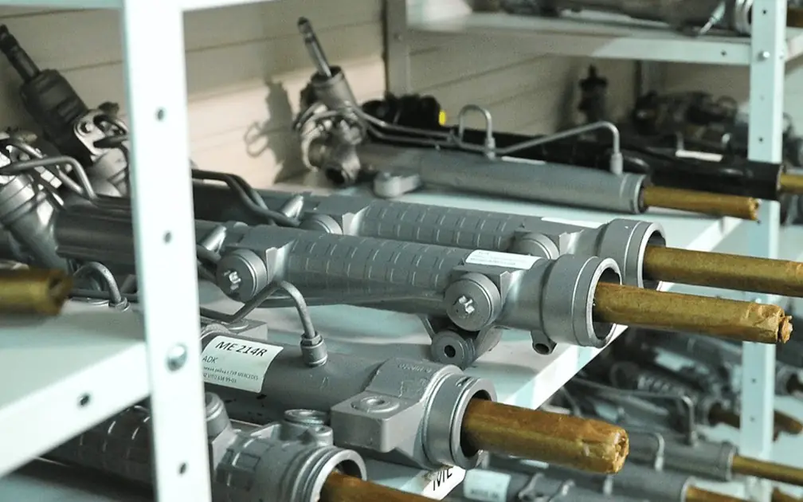
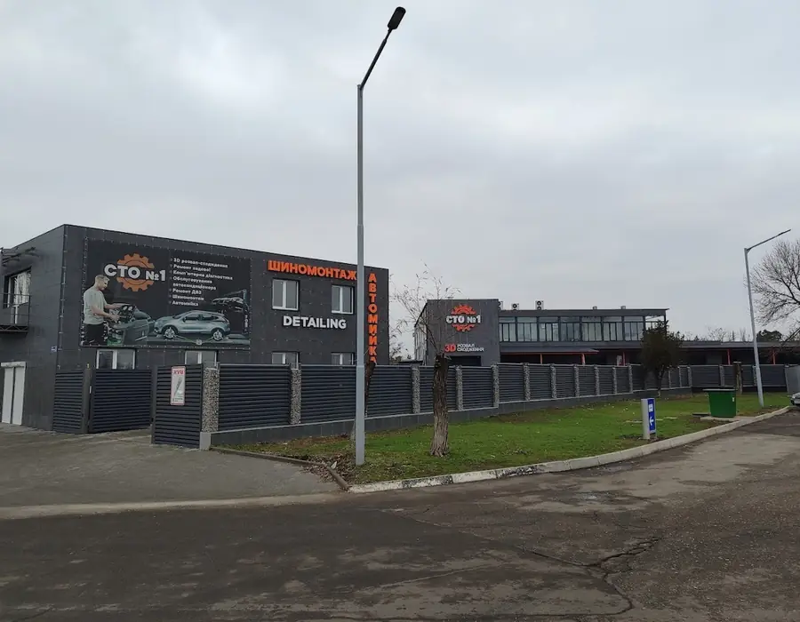
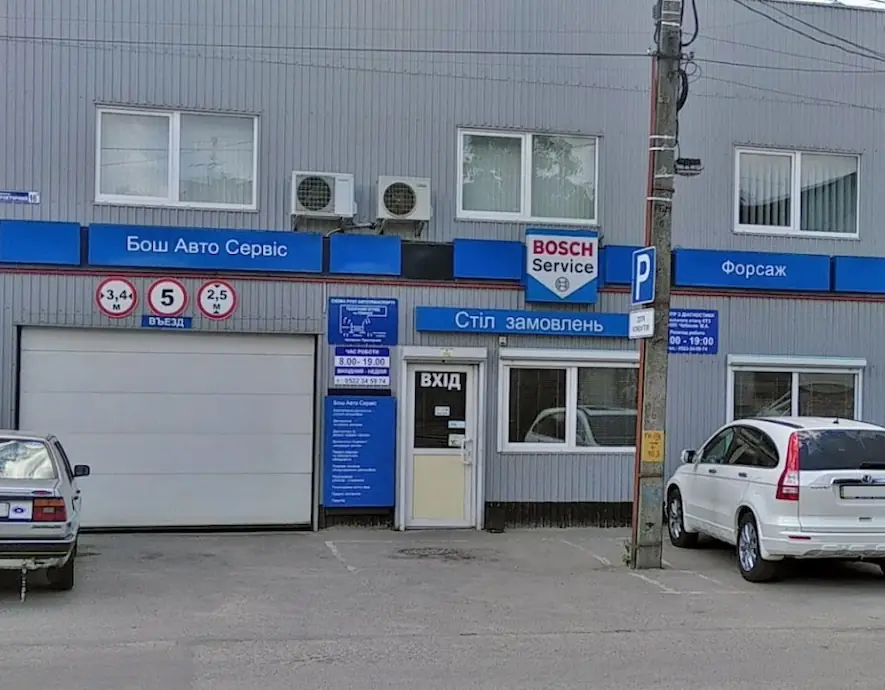
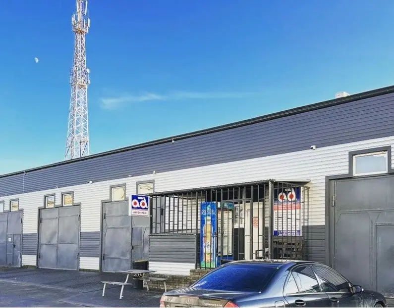
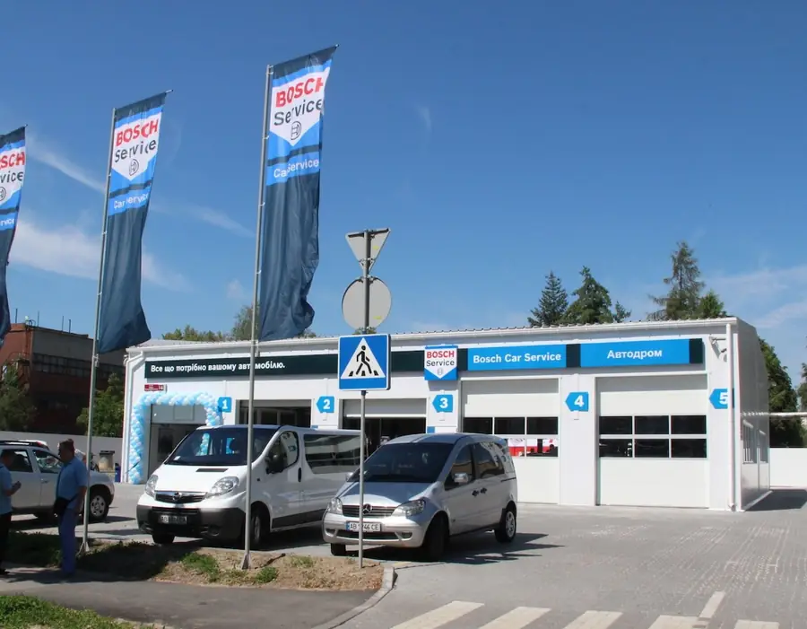

Ремонт кермового керування для партнерів-СТО
Ви віддаєте нам на ремонт будь-який агрегат кермового керування — і того ж дня отримуєте вже відремонтований агрегат вашого клієнта. Також пропонуємо на обмін уже відновлені запчастини за ціною ремонту.

Переваги партнерства
- Кур'єрська доставка по Одесі. Оплата доставки в обидва боки по Україні — за наш рахунок, зручним для вас способом.
- Технічна підтримка фахівців «Автодоктор».
- Ексклюзивні ціни та відстрочка платежу.
- Обмінюємо ваш агрегат на відновлений за ціною ремонту.
- Компенсація за монтаж і демонтаж у разі гарантійного ремонту.
- Професійне обладнання та перевірочні стенди.
Як це працює
- До вас приїхав клієнт з несправним агрегатом.
- Того ж дня наш кур'єр забере рейку на ремонт.
- Протягом одного дня ремонтуємо і тестуємо кермову рейку вашого клієнта.
- Надсилаємо агрегат назад. Розрахунок при отриманні або переказом.
Що ремонтуємо
- Механічні рейки
- Кермові рейки з гідропідсилювачем
- Кермові рейки з електропідсилювачем
- Кермові редуктори
- Насоси з електропідсилювачем
- Кермові колонки з електропідсилювачем
- Насоси гідропідсилювача
Як ремонтуємо
Механічні та гідравлічні агрегати. Замінюємо зношені деталі, відновлюємо поверхню вала, гільзуємо корпус і розподільник рейки. Усі агрегати тестуються на стенді: перевіряємо герметичність, прохідну здатність розподільника кермової рейки, заміряємо вихідний тиск насосів і працездатність редукційного клапана.
Агрегати з електроприводом. Відновлюємо і механічну, і електричну частину. Видаляємо помилки блоку керування підсилювачем, оновлюємо прошивки, калібруємо датчики крутного моменту, відновлюємо та міняємо пошкоджені й зношені елементи. Імітуємо реальні умови роботи агрегату, як на автомобілі, за допомогою контролера ЕПК.
Обмінний фонд
На складі понад 150 відновлених агрегатів кермового керування. Якщо запчастина вашого клієнта є в наявності і він згоден на заміну — доставимо її того ж дня.
З нами працюють СТО по Україні

СТО №1Миколаїв
Bosch ServiceКропивницький
AD ServiceПервомайськ
Bosch ServiceВінницяЗапишіться на діагностику або ремонт
Залиште номер — менеджер передзвонить у робочий час, уточнить симптоми й запропонує зручний день. Записуватися краще за 1–2 дні.
Одеса, вул. Житомирська, 46
Пн–Пт 08:00–17:00 · Сб 08:00–13:00 ·